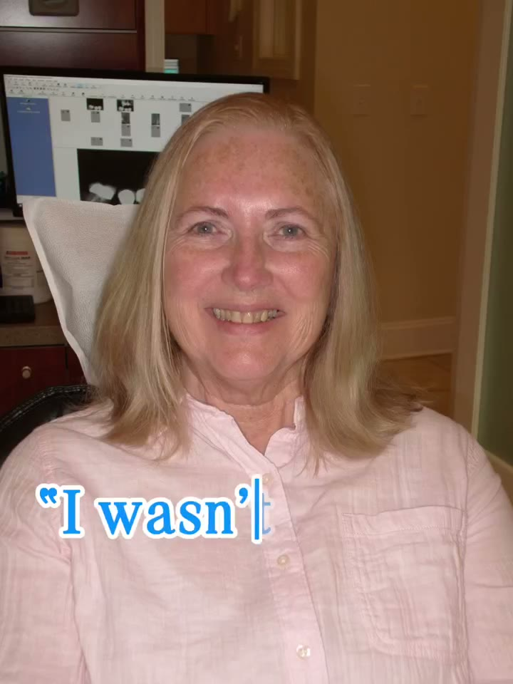

A real patient's story
“Dr. Burns put in four implants and connected them with a little custom bar. Now my denture clips down solid every morning and it doesn't move again until I take it out to clean it. Corn, apples, steak: all back.
A DreamSmile™ patient · Bar attachment overdenture
★★★★★ Rated 5.0 by patients on Google
